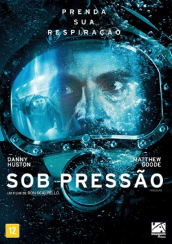

Sob Pressão (2015)


Prenda sua respiração.

Avaliação (TMDb):


5.7/10 (175 votos)
Avaliação (Usuário):
Outro Título:Pressure
País:United Kingdom, 91 minutos
Idiomas falados:Inglês, Português
Gênero(s):Drama, Suspense
Diretor(s):Ron Scalpello
Codec:MPEG-2 (DVD)
Número: 2210
Sinopse:
Quatro mergulhadores ficam presos em uma embarcação no fundo do mar depois de fazer uma operação arriscada para consertar um oleoduto.
Elenco:
Danny Huston, Joe Cole, Alan McKenna, Matthew Goode, Ian Pirie, Daisy Lowe, Gemita Samarra, Richard Bitta
Tipo de mídia: DVD5,
Legendas: Português
Alugado: Não
Tela: 16:9 Widescreen